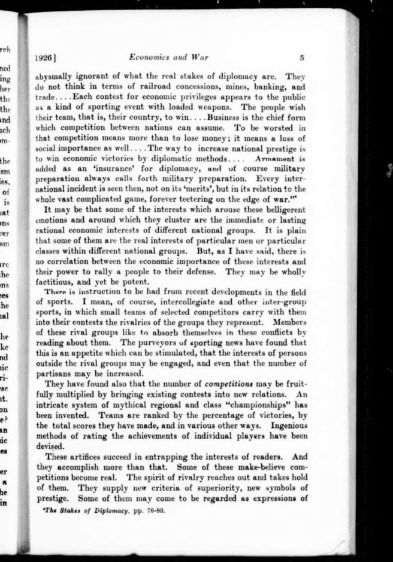

Allyn Young, 1925: o comércio leva à paz ou à guerra?
Leitura: 9 min
No discurso presidencial de Nova York, Allyn Young recusa tanto a ideia de guerra como cálculo econômico racional quanto a esperança de que a simples educação acabe com ela, e aposta em acordos internacionais.


Montesquieu escreveu que a paz é o efeito natural do comércio. Adam Smith respondeu que deveria ser, mas não era: o comércio, que deveria unir as nações como une os indivíduos, tinha se tornado a fonte mais fértil de discórdia. Um século depois, o historiador E. Lavisse foi mais longe e chamou de personagem mitológico o comércio como mensageiro da paz. É com esse trio de citações que Allyn A. Young, de Harvard, abre o discurso presidencial que proferiu na 38ª reunião anual da American Economic Association, em Nova York, em dezembro de 1925, e que inaugura o volume XVI da American Economic Review.
“O comércio, como mensageiro da paz, é um personagem mitológico.” (Commerce, as the messenger of peace, is a mythological character.)
Young pergunta em que medida o veredicto de Lavisse é verdadeiro e em que medida precisa continuar a sê-lo. A literatura econômica, observa, ajuda pouco a respondê-las.
Quais são as duas visões que Young examina?
A primeira, que ele chama de popular ou ingênua, vê a guerra como uma das atividades econômicas normais, até racionais, dos povos. Os grupos nacionais aparecem como o homem econômico das “mitologias metodológicas”, cada um buscando seus interesses de forma consistente e implacável; os interesses colidem, os conflitos crescem e viram guerra. Essa visão está nos jornais, nos livros de política internacional e nos relatórios diplomáticos, e usa um vocabulário próprio: guerra comercial, controle de matérias-primas, produtos excedentes, imperialismo econômico, penetração econômica.
Young distingue duas maneiras de manejar esse vocabulário. Numa, as nações são personalidades alertas que escolhem meios de forma deliberada: são Estados racionais, “maquiavélicos”. Na outra, prevalece o determinismo histórico: causas, não propósitos, moldam as políticas. Dessa linha saem dogmas que ele chama de pseudocientíficos, e o de influência mais difundida seria o marxista, segundo o qual a mudança técnica, somada à propriedade privada dos meios de produção, abre uma distância entre a capacidade de produzir e a de consumir; o excedente procura mercados externos e leva a rivalidades, colônias, imperialismo e guerras. Para Young, a imagem do excedente empurrado através das fronteiras sob escolta militar circula até entre autores que não se consideram marxistas.
A segunda visão sustenta que guerras travadas por vantagem econômica derrotam o próprio propósito: uma nação ganha com a prosperidade das outras, não com a sua pobreza. Young diz que a maioria dos economistas subscreveria essa tese, com as qualificações necessárias, e cita A Grande Ilusão, de Norman Angell. Se os economistas deram pouca atenção ao livro, sugere, foi porque suas conclusões lhes pareciam doutrina corrente. Ainda assim aponta limites: Angell teria dado pouco peso aos interesses particulares servidos por uma política agressiva e não teria separado bem ganhos imediatos de ganhos finais.
Por que a educação não bastaria?
Mesmo admitindo que Angell e os economistas estejam certos, Young duvida que um lento processo de educação convença o mundo da inutilidade do nacionalismo econômico agressivo. Um progresso que depende de os homens se tornarem mais razoáveis tende a ser adiado indefinidamente. Mas o argumento central é outro: os conceitos com que pensamos a competição internacional vêm do mercado, da compra e venda, e as relações econômicas entre nações não se parecem com as de comprador e vendedor.
Os valores da rivalidade internacional, escreve, lembram mais os valores irracionais das escolhas de consumo do que os lucros monetários do comércio. Domínio econômico, império, independência econômica, “um lugar ao sol”, controle de mercados, liberdade dos mares: cada expressão tem significado econômico, mas não há relação visível entre esse significado e seu poder de levar à guerra. Young recorre a Walter Lippmann, para quem o cidadão comum ignora o que está em jogo na diplomacia e vê cada disputa por privilégios econômicos como uma espécie de evento esportivo.
A analogia esportiva é desenvolvida pelo próprio autor. As competições intercolegiais criam rivalidades que os jornais estimulam e multiplicam com campeonatos regionais, rankings e estatísticas individuais; algumas dessas competições inventadas acabam se tornando reais e passam a fornecer símbolos de prestígio. O mundo em que as nações exibem interesses opostos, conclui, é em grande parte um mundo de padrões e símbolos, e é novo, porque as nações modernas têm poucos séculos. Ele cita John Dewey contra a explicação das guerras por instintos belicosos ou motivos aquisitivos, que compara à lógica de que o ópio faz dormir por sua virtude dormitiva.
Como os mitos viram política?
Young descreve uma espécie de animismo moderno que atribui intenções malignas a nações personificadas. Uma nova empresa alemã para operar na Rússia vira “a Alemanha domina a Rússia”; um aumento de exportações alemãs pouco importantes para a Suécia vira controle do mercado sueco. Nos arquivos de uma revista comercial alemã de antes da guerra encontrou referências à “conquista” da América Latina pelos Estados Unidos.
Essas impressões moldam condutas. O medo dos trustes americanos foi uma das razões alegadas para os cartéis alemães de exportação; os cartéis alemães, por sua vez, pesaram na discussão que levou à lei Webb-Pomerene de 1918, que permite no comércio exterior americano combinações proibidas no comércio doméstico. Retaliação gera retaliação, e assim, nas palavras do autor, um mundo de boatos e mitos se torna o mundo das políticas nacionais. Enquanto cada Estado for ao mesmo tempo guardião de seus interesses e intérprete das intenções alheias, nada diferente é possível.
O que os acordos internacionais já conseguiram?
Young separa os campos em que houve acordo. Em comunicações e transportes, a conveniência e o interesse comum em regras uniformes tornaram os acordos imperativos. No trânsito de mercadorias e no uso de rios e canais, houve avanço, em parte por compulsão; as cláusulas de liberdade de trânsito dos tratados do fim da guerra prepararam a Convenção de Barcelona, de março de 1921. Na repressão à concorrência desleal, os acordos se limitaram a patentes, direitos autorais e marcas. O autor menciona ainda a legislação trabalhista internacional e o trabalho preparatório do Comitê Econômico da Liga das Nações sobre arbitragem comercial, proibições de exportação e importação e dupla tributação.
Os acordos que tentaram limitar de fato a “estratégia” comercial tiveram vida curta, como acordos de preço entre empresas: o Ato de Berlim de 1885, a Convenção Açucareira de Bruxelas de 1902 e o Ato de Algeciras de 1906. Na falta de regras gerais, a Europa continental viveu de tratados bilaterais amarrados por cláusulas de nação mais favorecida, um sistema instável e desigual, em que Estados fortes e industriais barganhavam melhor. As tarifas dos novos Estados do leste europeu seriam um exemplo: tarifas de barganha, mais altas do que os interesses desses países exigiriam, que bloqueiam canais antigos de comércio e tendem a subir.
Qual é a saída proposta?
Segundo o autor, os estudiosos estão convencidos de que o passo mais importante são convenções multilaterais que definam as condições do intercâmbio econômico. O mínimo irredutível é acabar com o poder de uma nação de discriminar o comércio de outra. Era esse o sentido do terceiro dos Quatorze Pontos de Wilson e, em parte, da cláusula do Pacto da Liga das Nações sobre “tratamento equitativo” do comércio. Young prefere a palavra da Liga, equitativo, à palavra de Wilson, igualdade, porque não fixa limites precisos ao alcance dos acordos. No momento, diz, importa menos o conteúdo do que o fato de se chegar a acordos que criem uma regra geral, e não exceções, como foram as restrições impostas à Bélgica no Congo e à França no Marrocos.
O exemplo positivo é a reconstrução financeira. Os planos para Áustria, Hungria e Alemanha valem, para Young, sobretudo porque incorporam acordos internacionais; obtê-los foi mais difícil e mais importante do que formular os remédios econômicos. Mesmo que partes do Plano Dawes falhem, escreve, ele provavelmente terá resolvido o problema das reparações. A conclusão é que as “causas econômicas da guerra” não são expressões inevitáveis da natureza humana, mas padrões de conduta ligados a formas de organização, e outras formas estão ao alcance prático.
“O único caminho para a paz econômica é voltar os olhos para ela.” (the only way to secure economic peace is to turn our eyes toward it.)
Na minha leitura
Na minha leitura, o discurso aplica ao comércio internacional uma ideia que hoje chamaríamos de economia de instituições e de expectativas: o conflito não decorre só de interesses materiais, mas das regras do jogo e das crenças sobre as intenções dos outros. A distinção entre interesses conjuntos, recíprocos e opostos organiza bem os casos em que a cooperação é fácil, como transportes, e aqueles em que ela depende de regra geral e de quem a faça cumprir.
O argumento sobre tarifas de barganha também tem estrutura econômica clara: quando cada país escolhe seus direitos de importação para negociar, e não para proteger, o resultado agregado é mais alto do que qualquer um desejaria. Young descreve o problema sem formalizá-lo, mas aponta a mesma solução que a teoria posterior consagraria, a não discriminação como regra multilateral.
Glossário
- Cláusula de nação mais favorecida
- compromisso de estender a um país qualquer vantagem tarifária concedida a outro.
- Tarifa de barganha
- direito de importação fixado para ser trocado em negociações, e não para proteger a produção.
- Lei Webb-Pomerene
- lei americana de 1918 que permite associações de exportadores proibidas no mercado interno.
- Plano Dawes
- plano de 1924 para escalonar as reparações alemãs, com empréstimo internacional.
Fontes
- Economics and War — Allyn A. Young (Harvard University) (pp. 1–13). Internet Archive (número completo, PDF)
- Edição completa, com os demais artigos: Nº 195 do Arquivo.
Documento em domínio público (EUA, publicado antes de 1931), via JSTOR Early Journal Content e Internet Archive. Resumo e comentário do autor deste site, sem afiliação com a American Economic Association. Encontrou um erro? Escreva: a correção é publicada no próprio texto, com data.
↑ Nº 195 · Young e a guerra econômica, Knight lê Pigou, Wolfe lê Cassel Wooster, 1926: o armazém da vila e a origem da indústria →